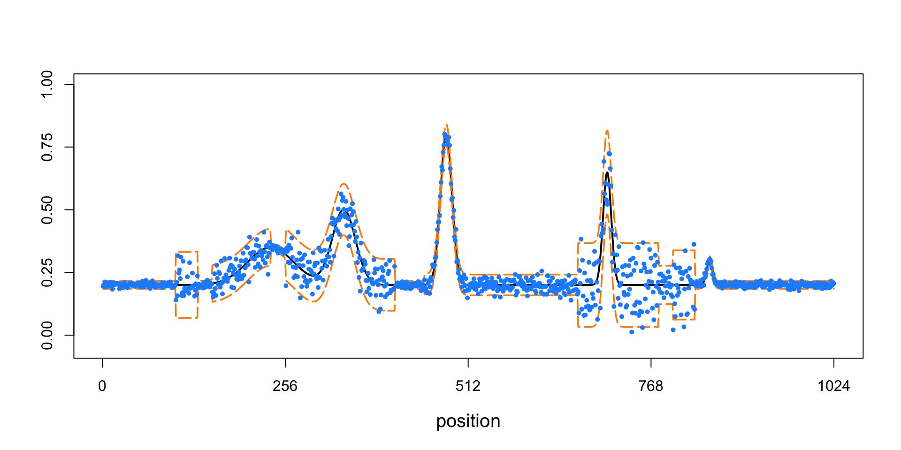
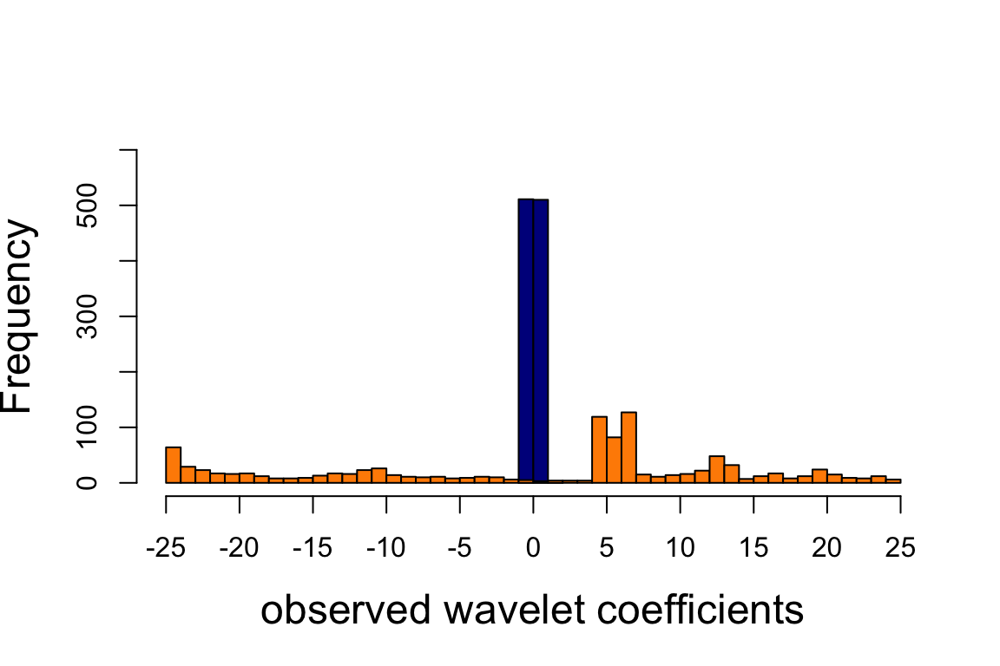
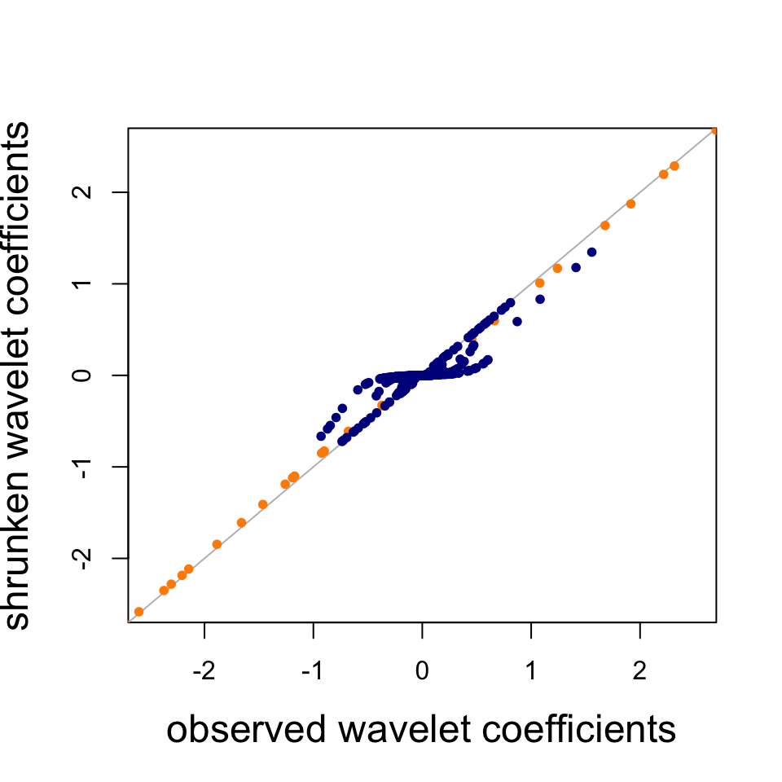
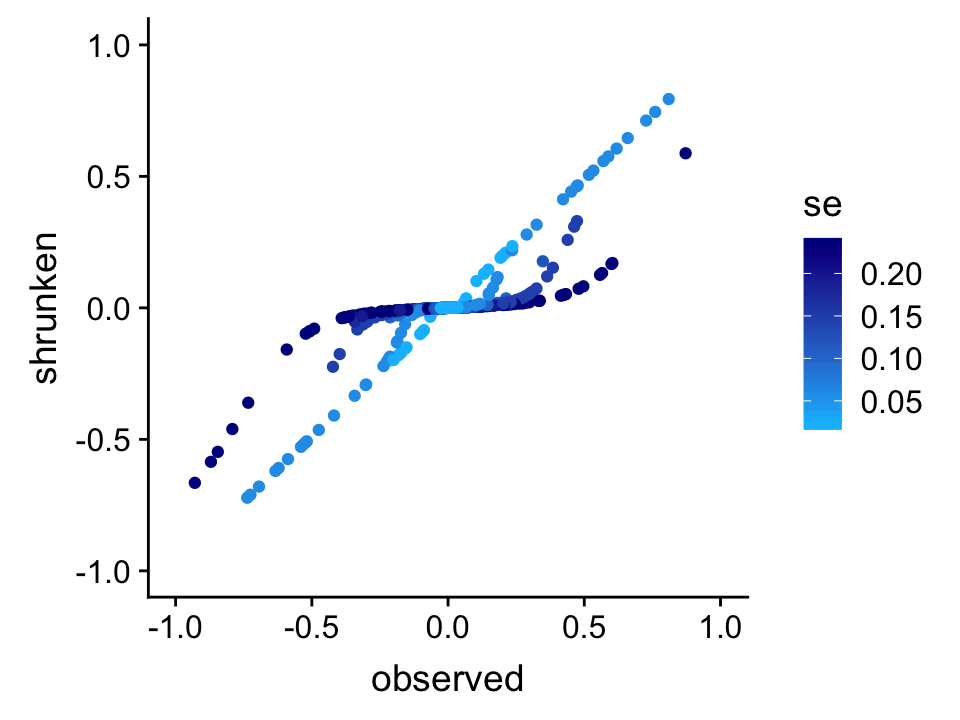
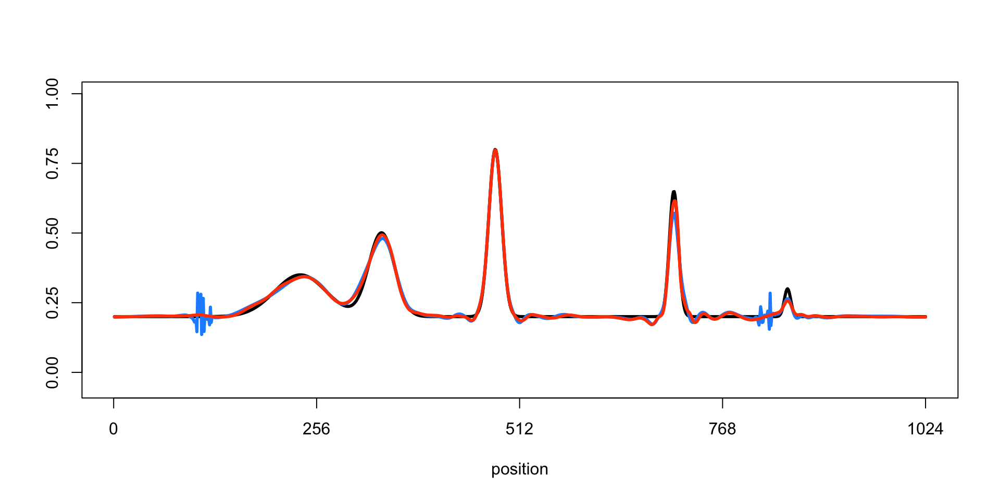

Last updated: 2018-11-06
workflowr checks: (Click a bullet for more information) ✔ R Markdown file: up-to-date
Great! Since the R Markdown file has been committed to the Git repository, you know the exact version of the code that produced these results.
✔ Environment: empty
Great job! The global environment was empty. Objects defined in the global environment can affect the analysis in your R Markdown file in unknown ways. For reproduciblity it’s best to always run the code in an empty environment.
✔ Seed:
set.seed(1)
The command set.seed(1) was run prior to running the code in the R Markdown file. Setting a seed ensures that any results that rely on randomness, e.g. subsampling or permutations, are reproducible.
✔ Session information: recorded
Great job! Recording the operating system, R version, and package versions is critical for reproducibility.
✔ Repository version: 363d973
wflow_publish or wflow_git_commit). workflowr only checks the R Markdown file, but you know if there are other scripts or data files that it depends on. Below is the status of the Git repository when the results were generated:
Ignored files:
Ignored: dsc/code/Wavelab850/MEXSource/CPAnalysis.mexmac
Ignored: dsc/code/Wavelab850/MEXSource/DownDyadHi.mexmac
Ignored: dsc/code/Wavelab850/MEXSource/DownDyadLo.mexmac
Ignored: dsc/code/Wavelab850/MEXSource/FAIPT.mexmac
Ignored: dsc/code/Wavelab850/MEXSource/FCPSynthesis.mexmac
Ignored: dsc/code/Wavelab850/MEXSource/FMIPT.mexmac
Ignored: dsc/code/Wavelab850/MEXSource/FWPSynthesis.mexmac
Ignored: dsc/code/Wavelab850/MEXSource/FWT2_PO.mexmac
Ignored: dsc/code/Wavelab850/MEXSource/FWT_PBS.mexmac
Ignored: dsc/code/Wavelab850/MEXSource/FWT_PO.mexmac
Ignored: dsc/code/Wavelab850/MEXSource/FWT_TI.mexmac
Ignored: dsc/code/Wavelab850/MEXSource/IAIPT.mexmac
Ignored: dsc/code/Wavelab850/MEXSource/IMIPT.mexmac
Ignored: dsc/code/Wavelab850/MEXSource/IWT2_PO.mexmac
Ignored: dsc/code/Wavelab850/MEXSource/IWT_PBS.mexmac
Ignored: dsc/code/Wavelab850/MEXSource/IWT_PO.mexmac
Ignored: dsc/code/Wavelab850/MEXSource/IWT_TI.mexmac
Ignored: dsc/code/Wavelab850/MEXSource/LMIRefineSeq.mexmac
Ignored: dsc/code/Wavelab850/MEXSource/MedRefineSeq.mexmac
Ignored: dsc/code/Wavelab850/MEXSource/UpDyadHi.mexmac
Ignored: dsc/code/Wavelab850/MEXSource/UpDyadLo.mexmac
Ignored: dsc/code/Wavelab850/MEXSource/WPAnalysis.mexmac
Ignored: dsc/code/Wavelab850/MEXSource/dct_ii.mexmac
Ignored: dsc/code/Wavelab850/MEXSource/dct_iii.mexmac
Ignored: dsc/code/Wavelab850/MEXSource/dct_iv.mexmac
Ignored: dsc/code/Wavelab850/MEXSource/dst_ii.mexmac
Ignored: dsc/code/Wavelab850/MEXSource/dst_iii.mexmac
Unstaged changes:
Modified: README.md
Modified: analysis/motorcycle.Rmd
Staged changes:
Modified: analysis/motorcycle.Rmd
| File | Version | Author | Date | Message |
|---|---|---|---|---|
| Rmd | 134b6f8 | Peter Carbonetto | 2018-11-06 | wflow_publish(“spikesdemo.Rmd”) |
| Rmd | 1e6070c | Peter Carbonetto | 2018-11-06 | wflow_publish(“spikesdemo.Rmd”) |
| html | 6a67fcb | Peter Carbonetto | 2018-11-06 | Added setup instructions to Spikes demo. |
| Rmd | f2e4790 | Peter Carbonetto | 2018-11-06 | wflow_publish(“spikesdemo.Rmd”) |
| html | 967f9c7 | Peter Carbonetto | 2018-10-17 | Working on improved plots for chipseq.R. |
| Rmd | 757462c | Peter Carbonetto | 2018-10-09 | Working on motorcycle .Rmd example. |
| Rmd | 1a304e7 | Peter Carbonetto | 2018-09-28 | Added back signal plot to summarize.gaussian.sims.R. |
| Rmd | c21eab1 | Peter Carbonetto | 2018-09-27 | Working on summarize.gaussian.sims.R revisions for manuscript. |
| html | 4c86f87 | Peter Carbonetto | 2018-09-27 | Re-ran wflow_publish(“spikesdemo.Rmd”) after minor revisions. |
| Rmd | 3d5c837 | Peter Carbonetto | 2018-09-27 | wflow_publish(“spikesdemo.Rmd”) |
| Rmd | af743b7 | Peter Carbonetto | 2018-09-27 | A few minor revisions to the spikes demo. |
| Rmd | c4b2d0b | Peter Carbonetto | 2018-08-23 | wflow_publish(“spikesdemo.Rmd”) |
| html | baab693 | Peter Carbonetto | 2018-08-23 | More minor improvements to the spikes demo. |
| Rmd | 3f6e340 | Peter Carbonetto | 2018-08-23 | wflow_publish(“spikesdemo.Rmd”) |
| Rmd | 297fcc1 | Peter Carbonetto | 2018-08-23 | wflow_publish(“spikesdemo.Rmd”) |
| html | 04e9900 | Peter Carbonetto | 2018-08-23 | First build of the spikesdemo example. |
| Rmd | 93386bb | Peter Carbonetto | 2018-08-23 | wflow_publish(“spikesdemo.Rmd”) |
This small demonstration illustrates key features of the SMASH method on a small, simulated data set with spatially structured variances. This code implements the example presented in Sec. 4.1 of the paper.
To run this example on your own computer, please follow these setup instructions. These instructions assume you already have R and/or RStudio installed on your computer.
Download or clone the git repository on your computer.
Launch R, and change the working directory to be the “analysis” folder inside your local copy of the git repository.
Install some of the packages used here and in the code below:
install.packages(c("devtools","ggplot2","cowplot"))Finally, install the ashr and smashr packages from GitHub:
library(devtools)
install_github("stephens999/ashr",upgrade_dependencies = FALSE)
install_github("stephenslab/smashr",upgrade_dependencies = FALSE)See the “Session Info” at the bottom for the versions of the software and R packages that were used to generate the results shown below.
We begin by loading the ashr, smashr, ggplot2 and cowplot packages, as well as some additional functions used in the code below.
library(ashr)
library(smashr)
library(ggplot2)
library(cowplot)
source("../code/misc.R")Variable mu.sp defines the mean signal.
n <- 1024
t <- 1:n/n
spike.f <-
function (x) (0.75 * exp(-500 * (x - 0.23)^2) +
1.5 * exp(-2000 * (x - 0.33)^2) +
3 * exp(-8000 * (x - 0.47)^2) +
2.25 * exp(-16000 * (x - 0.69)^2) +
0.5 * exp(-32000 * (x - 0.83)^2))
mu.sp <- spike.f(t)
mu.sp <- (1 + mu.sp)/5Simulate the noisy observations from the normal distribution with means that are given by the “Spikes” function, and with spatially structured variances given by the “Clipped Blocks” function.
pos <- c(0.1,0.13,0.15,0.23,0.25,0.4,0.44,0.65,0.76,0.78,0.81)
hgt <- 2.88/5 * c(4,-5,3,-4,5,-4.2,2.1,4.3,-3.1,2.1,-4.2)
sig.cb <- rep(0,length(t))
for (j in 1:length(pos))
sig.cb <- sig.cb + (1 + sign(t - pos[j])) * (hgt[j]/2)
sig.cb[sig.cb < 0] <- 0
sig.cb <- 0.1 + (sig.cb - min(sig.cb))/max(sig.cb)
rsnr <- sqrt(3)
sig.cb <- sig.cb/mean(sig.cb) * sd(mu.sp)/rsnr^2
x.sim <- rnorm(n,mu.sp,sig.cb)Plot the simulated data set.
par(cex.axis = 1,cex.lab = 1.25)
plot(mu.sp,type = 'l',ylim = c(-0.05,1),xlab = "position",
ylab = "",lwd = 3,xaxp = c(0,1024,4),yaxp = c(0,1,4))
lines(mu.sp + 2*sig.cb,col = "darkorange",lty = 5,lwd = 1.8)
lines(mu.sp - 2*sig.cb,col = "darkorange",lty = 5,lwd = 1.8)
points(x.sim,cex = 0.7,pch = 16,col = "dodgerblue")
| Version | Author | Date |
|---|---|---|
| 6a67fcb | Peter Carbonetto | 2018-11-06 |
| baab693 | Peter Carbonetto | 2018-08-23 |
| 04e9900 | Peter Carbonetto | 2018-08-23 |
This plot shows the “spikes” mean function (the black line), +/- 2 standard deviations (the orange lines), and the simulated data (the light blue points).
Now we apply SMASH, as well as the translation invariant (TI) thresholding method, to the “spikes” data. Here we run the TI thresholding method twice—once when the variance is assumes to be constant (“homoskedastic”), and once when it is estimated using the RMAD algorithm. The first method yields very poor estimates, so they are not shown in the plots below.
The SMASH method is able to estimate the variance.
sig.est <- sqrt(2/(3 * (n - 2)) *
sum((1/2 * x.sim[1:(n-2)] - x.sim[2:(n-1)] + x.sim[3:n])^2/2))
mu.smash <- smash(x.sim,family = "DaubLeAsymm",filter.number = 8)
mu.ti.homo <- ti.thresh(x.sim,sigma = sig.est,family = "DaubLeAsymm",
filter.number = 8)
mu.ti <- ti.thresh(x.sim,method = "rmad",family = "DaubLeAsymm",
filter.number = 8)It should take at the very most a few minutes to run SMASH and TI thresholding.
Get the (true) wavelet coefficients and their variances.
wc.sim <- titable(x.sim)$difftable
wc.var.sim <- titable(sig.cb^2)$sumtable
wc.true <- titable(mu.sp)$difftableGet the shrunken estimates of the wavelet coefficients.
wc.sim.shrunk <- vector("list",10)
wc.pres <- vector("list",10)
for(j in 0:(log2(n) - 1)){
wc.sim.shrunk[[j+1]] <-
ash(wc.sim[j+2,],sqrt(wc.var.sim[j+2,]),prior = "nullbiased",
pointmass = TRUE,mixsd = NULL,mixcompdist = "normal",
gridmult = 2,df = NULL)$result
wc.pres[[j+1]] <- 1/sqrt(wc.var.sim[j+2,])
}Plot the distribution of the observed wavelet coefficients at a coarser scale (scale = 1, orange) and at a finer scale (scale = 7, dark blue).
par(cex.axis = 1,cex.lab = 1.25)
hist(wc.sim[4,],breaks = 2,xlab = "observed wavelet coefficients",
xlim = c(-25,25),ylim = c(0,600),col = "darkblue",xaxp = c(-25,25,10),
yaxp = c(0,600,6),main = "")
hist(wc.sim[10,],breaks = 40,add = TRUE,col = "darkorange")
| Version | Author | Date |
|---|---|---|
| baab693 | Peter Carbonetto | 2018-08-23 |
Observe that the scale = 7 WCs (dark blue) are much more concentrated near zero because the signal is smoother at this finer scale.
Plot the observed wavelet coefficients (at scales 1 and 7 only) vs. the “shrunken” wavelet coefficients estimated by adaptive shrinkage.
par(cex.axis = 1,cex.lab = 1.25)
plot(c(),c(),xlab = "observed wavelet coefficients",
ylab = "shrunken wavelet coefficients",
xlim = c(-2.5,2.5),ylim = c(-2.5,2.5))
abline(0,1,lty = 1,col = "gray",lwd = 1)
points(wc.sim[10,],wc.sim.shrunk[[9]]$PosteriorMean,pch = 20,cex = 1,
col = "darkorange")
points(wc.sim[4,],wc.sim.shrunk[[3]]$PosteriorMean,pch = 20,cex = 1,
col = "darkblue")
| Version | Author | Date |
|---|---|---|
| baab693 | Peter Carbonetto | 2018-08-23 |
Observe that the scale = 7 WCs (dark blue) are strongly shrunk toward zero, whereas the scale = 1 WCs (orange) are not shrunk nearly as much; SMASH infers from the data that the scale = 7 WCs are heavily concentrated around zero, and consequently SMASH shrinks them more strongly.
Plot the observed wavelet coefficients (at scale 7 only) vs. the “shrunken” wavelet coefficients estimated by adaptive shrinkage in order to see how the amount of shrinkage depends on the standard error (s.e.) in the observations.
wc.sig.3 <- 1/wc.pres[[3]]
p <- ggplot(data.frame(observed = wc.sim[4,],
shrunken = wc.sim.shrunk[[3]]$PosteriorMean,
se = wc.sig.3),
aes(x = observed,y = shrunken,col = se)) +
geom_point(na.rm = TRUE) +
xlim(c(-1,1)) +
ylim(c(-1,1)) +
scale_color_gradientn(colors = c("deepskyblue","darkblue")) +
theme_cowplot()
print(p)
| Version | Author | Date |
|---|---|---|
| baab693 | Peter Carbonetto | 2018-08-23 |
From this plot, it is evident that SMASH shrinks WCs differently depending on their precision; specifically, WCs that are less precise—i.e., higher standard error (s.e.)—are shrunk more strongly toward zero.
Finally, we plot the ground-truth signal (the mean function, drawn as a black line) and the signals recovered by TI thresholding (light blue line) and SMASH (the red line).
par(cex.axis = 1)
plot(mu.sp,type = "l",col = "black",lwd = 3,xlab = "position",ylab = "",
ylim = c(-0.05,1),xaxp = c(0,1024,4),yaxp = c(0,1,4))
lines(mu.ti,col = "dodgerblue",lwd = 3)
lines(mu.smash,col = "orangered",lwd = 3)
| Version | Author | Date |
|---|---|---|
| 4c86f87 | Peter Carbonetto | 2018-09-27 |
| baab693 | Peter Carbonetto | 2018-08-23 |
In this example, the smoothed signal from SMASH is noticeably more accurate than using TI thresholding (in which the variance is estimated by running the median absolute deviation, or “RMAD”, method). The TI thresholding estimate shows notable artifacts.
sessionInfo()
# R version 3.4.3 (2017-11-30)
# Platform: x86_64-apple-darwin15.6.0 (64-bit)
# Running under: macOS High Sierra 10.13.6
#
# Matrix products: default
# BLAS: /Library/Frameworks/R.framework/Versions/3.4/Resources/lib/libRblas.0.dylib
# LAPACK: /Library/Frameworks/R.framework/Versions/3.4/Resources/lib/libRlapack.dylib
#
# locale:
# [1] en_US.UTF-8/en_US.UTF-8/en_US.UTF-8/C/en_US.UTF-8/en_US.UTF-8
#
# attached base packages:
# [1] stats graphics grDevices utils datasets methods base
#
# other attached packages:
# [1] cowplot_0.9.3 ggplot2_3.1.0 smashr_1.2-0 ashr_2.2-23
#
# loaded via a namespace (and not attached):
# [1] Rcpp_0.12.19 bindr_0.1.1 pillar_1.2.1
# [4] plyr_1.8.4 compiler_3.4.3 git2r_0.23.0
# [7] workflowr_1.1.1 R.methodsS3_1.7.1 R.utils_2.6.0
# [10] bitops_1.0-6 iterators_1.0.9 tools_3.4.3
# [13] digest_0.6.17 tibble_1.4.2 evaluate_0.11
# [16] gtable_0.2.0 lattice_0.20-35 pkgconfig_2.0.2
# [19] rlang_0.2.2 Matrix_1.2-12 foreach_1.4.4
# [22] yaml_2.2.0 parallel_3.4.3 bindrcpp_0.2.2
# [25] withr_2.1.2 dplyr_0.7.6 stringr_1.3.1
# [28] knitr_1.20 REBayes_1.3 caTools_1.17.1
# [31] tidyselect_0.2.4 rprojroot_1.3-2 grid_3.4.3
# [34] glue_1.3.0 data.table_1.11.4 R6_2.2.2
# [37] rmarkdown_1.10 purrr_0.2.5 magrittr_1.5
# [40] whisker_0.3-2 backports_1.1.2 scales_0.5.0
# [43] codetools_0.2-15 htmltools_0.3.6 MASS_7.3-48
# [46] assertthat_0.2.0 colorspace_1.4-0 labeling_0.3
# [49] wavethresh_4.6.8 stringi_1.2.4 Rmosek_8.0.69
# [52] lazyeval_0.2.1 doParallel_1.0.11 pscl_1.5.2
# [55] munsell_0.4.3 truncnorm_1.0-8 SQUAREM_2017.10-1
# [58] R.oo_1.21.0This reproducible R Markdown analysis was created with workflowr 1.1.1